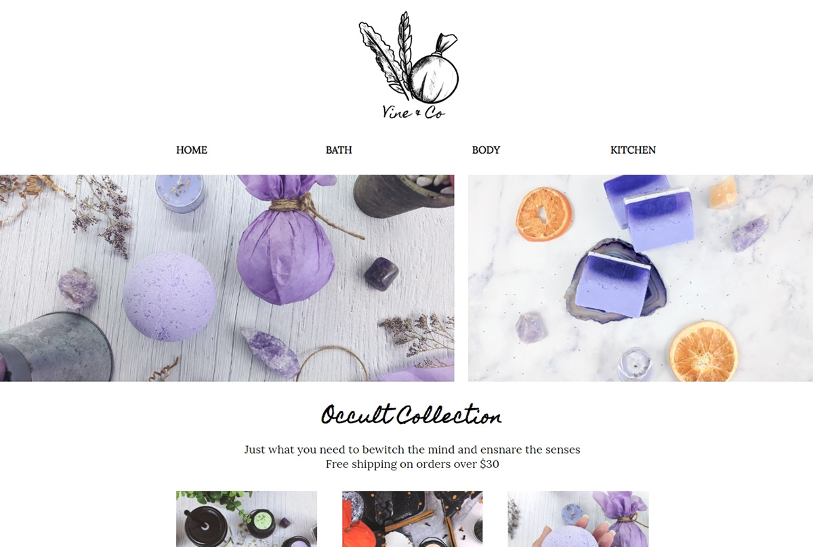

Resume
My name is Seven Larson and I am an illustrator, graphic designer, and web designer. With some small personal and private freelance projects under my belt, I also have former work experience in other fast-paced environments, both on individual tasks and as an integral part of a team! I have been recognized for my ability to notice patterns where others don't to solve problems before they occur. One small thing I pride myself on is my fast and accurate typing skills!
Skills - Proficient
Skills - Beginner
Tool Proficiencies
Projects

Mesesh - Before its closure, Sandspire of Mesesh was an art roleplaying game hosted on deviantArt that required a hub website for users to easily access information on how to play. This website was my first attempt at a Bootstrap navigation, as well as a responsive navigation that changes to fit for mobile devices.

Vine & Co - A mockup website I made for a friend using my own product photography, I made Vine & Co as an example of a simple storefront using minimal colors that could easily be swapped out with the rotation of seasonal items.
Professional Employment
ProDPI - April 2016 - November 2018
ProDPI offers high-quality print on-demand services to professional photographers. There I worked providing customer service and technical support to photographers to ensure they received the best possible prints for their clients.
Strengths: Technical troubleshooting on Windows 10 and Apple computers, chat customer service, color evaluation and Photoshop and Lightroom assistance
Main Goals: Assist customers via phone and email in a timely manner, resolve order and billing concerns, data entry for order information, communicating information on order adjustments to production, communicating information on order problems to customers
Secondary Tasks: Writing tutorials for ordering with our software, evaluating common customer concerns, converting Photoshop files for use with our browser-based card ordering system (create.prodpi.com)
Michaels - October 2014 - April 2016
Michaels is dedicated to providing high quality art supplies and products for home decor at affordable prices. Together with Aaron Brothers they also offer custom framing services for all your artwork and interior needs.
Strengths: Custom frame selection, design, assembly, knowledge of store layout and product location, customer service
Main Goals: Providing beautiful finished frame assemblies to hang on the wall and showcase artwork and prints, working as a team to ensure clients get their frames on time and in perfect condition, meeting production and sales goals
Secondary Tasks: Cashiering, restocking, returns, cleaning
Alpine Access - May 2014 - August 2014
Alpine Access powered by SYKES Home provides call center outsourcing and customer service operations to more than 2,000 clients.
Strengths: Providing account and technical troubleshooting
Main Goals: Providing account services for a client in the gaming industry, escalating account recovery concerns, technical support for gaming consoles
Secondary Tasks: Billing support, transferring to other external departments
Stream Global Services - September 2013 - November 2013
Stream Global Services (merged with Convergys in 2014 and then Concentrix in 2018) provided customer service call center outsourcing to clients globally.
Strengths: Providing timely customer service
Main Goals: Providing high-end account management to clients of a luxury telecommunications service
Secondary Tasks: Sales and billing support
Minnesota CSD Relay - November 2012 - August 2013
Minnesota CSD Relay is a government-mandated non-profit service that provides TTY and TDD relay phone services for the Deaf, Hard-of-Hearing, and Speech Disabled so that they may make phone calls while guaranteed privacy and safety as dictated by the FCC.
Strengths: Fast typing skills, explaining relay services to new users, handling conference calls with many speakers at once
Main Goals: Assisting customers to make every-day phone calls such as to family and loves ones, banks, restaurants and more without interruptions or delays
Secondary Tasks: Providing overnight customer service